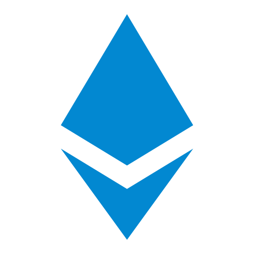
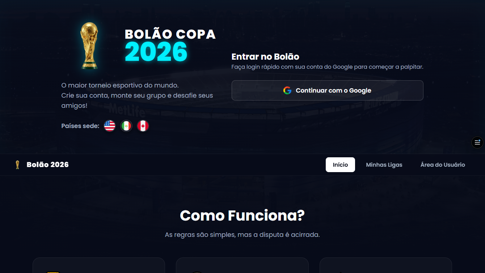
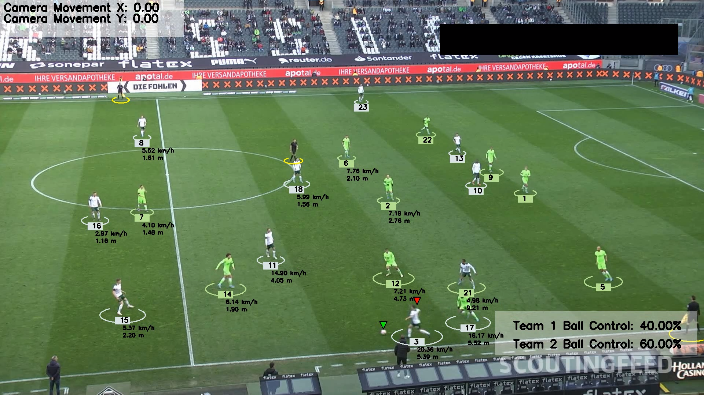

PROFESSIONAL
IT & DEV
Interfaces, systems, and technical support — built through college, analytical curiosity for sports data, and a constant drive to solve real-world problems.

Interfaces, systems, and technical support — built through college, analytical curiosity for sports data, and a constant drive to solve real-world problems.
/* a bit about me */
who's behind the code
Hi! My name is Yves, I am 25 years old and I am a Computer Science student at the Federal University of Uberlândia (UFU).
My story with technology began in 2017 with an IT Technician course at ETEC. Since then, I've been driven by curiosity to build real systems, explore cloud architectures, and analyze data — including projects focused on performance metrics applied to football.
With advanced English fluency and fully equipped for remote work, I aim to transform complex problems into efficient solutions.
/* journey */
work experience
Diagnosis and resolution of critical incidents in on-premise and cloud environments (AWS: EC2, S3, CloudWatch). Experience analyzing logs, manipulating relational databases, and providing technical support focused on strictly meeting SLAs.
API development and project maintenance using JavaScript and Node.js in an agile environment. Creation and authorization of Smart Contracts with Solidity, ensuring data security and decentralization.
Want the full resume? download PDF ↗
/* stack I use */
languages, tools & infra
From languages to infrastructure — what I use daily to build, test, and solve problems.
 JavaScript
JavaScript Python
Python Node.js
Node.js HTML
HTML CSS
CSS Java
Java C
C MySQL
MySQL PostgreSQL
PostgreSQL Linux
Linux Git
Git AWS
AWS Docker
Docker
Solidity/* my projects */
code in action

Decentralized voting system based on blockchain using Ethereum, Hardhat, Node.js, and JavaScript, ensuring transparency and integrity in the voting process.

Web page inspired by the Apple Watch presentation, developed with HTML, CSS, and JavaScript, focusing on modern design and responsiveness.

Interactive platform for predictions and tracking World Cup matches, combining passion for football with web development.

A computer vision system designed to extract physical and tactical metrics from football matches using broadcast videos. The pipeline acts as a "virtual GPS" for tactical analysis.
Have a project in mind or want to chat about tech and opportunities? Send me a message, I'll get back to you as soon as I can.
✉ yves.yan@hotmail.com
🌐 github.com/yvesesteves
💼 linkedin.com/in/yvesesteves